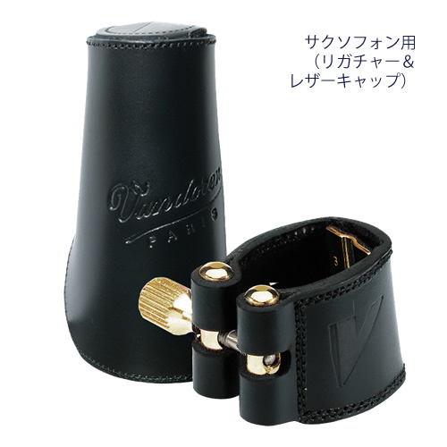
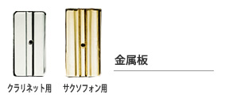

レザーリガチャー、リガチャーキャップ
バンドーレン・リガチャー、リガチャーキャップ
【レザー リガチャーの特徴】
高品質の本革で、リードとマウスピースを完全に調和させるよう、手作りの伝統に基づき細心の注意を持って熟練の手で縫製されています。
革は生きている素材ですから、剛性と柔軟性の理想的なコンビネーションです。
その弾力性は、しばしば「明るくさせ」たり「荒くさせ」たりする音の原因となる高調波を吸収します。
さらに、マウスピース表面のより広い範囲と接しますから、より芯のある、コンパクトな音を作ります。
リガチャー上部の一個のスクリューは、クラリネットでは銀メッキのブロンズで、サクソフォンでは金メッキで、リガチャーを均等に正確に締め付けます。
レザーリガチャーには、リガチャーの形状を維持するための特製木型がついています。

| クラリネット | リガチャー＆ プラスチックキャップ |
リガチャー＆ レザーキャップ |
レザーキャップ | プレッシャー・ プレート3種 |
|---|---|---|---|---|
| B♭ | LC21P | LC21L | C21L | PP21 |
| E♭ | LC22P | LC22L | C22L | PP22 |
| Alto | LC23P | LC23L | C23L | PP23 |
| Bass | LC24P | LC24L | C24L | PP24 |
| B♭ （German System） |
LC25P | LC25L | C25L | PP25 |
| サクソフォン | リガチャー＆ プラスチックキャップ |
リガチャー＆ レザーキャップ |
レザーキャップ | プレッシャー・ プレート3種 |
|---|---|---|---|---|
| Soprano | LC26P | LC26L | C26L | PP26 |
| Alto | LC27P | LC27L | C27L | PP27 |
| Tenor （V16メタルマウスピースを除く） |
LC28P | LC28L | C28L | PP28 |
| Baritone | LC29P | LC29L | C29L | PP29 |
| Baritone （V16 エボナイトマウスピース用） |
LC290P | LC290L | C290L | PP28 |
【あなたの音をクリエイトする交換可能な3つのプレッシャー・プレート】
ベルクロで、プレートの交換を容易にするとともにリガチャー全体の振動をより柔軟にします。
|  | ||
| より多彩でよりコンパクトな音。 金属板と柔軟なリガチャーのコンビネーションは、プレイヤーに両方の材料の最良の音の特質を提供します。 |
リガチャーと同じ革製で、芯のある、わずかにダークなコンパクトな音を作ります。 | さらに柔軟な材質で、より丸みのある、豊かな音を作ります。 |